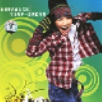

[ti:蝴蝶泉边] [ar:黄雅莉 ] [al:崽崽 ] [by:5nd From 张永来] [offset:500] [00:06.06]歌手：黄雅莉 专辑：崽崽 [00:08.88] [00:10.60]歌曲名:蝴蝶泉边 [00:12.64]歌手:黄雅莉 [00:14.49]专辑: lt;崽崽 gt; [00:16.17]词曲:彭青 [00:29.83]我看到满片花儿的开放 [00:33.41]隐隐约约有声歌唱 [00:37.04]开出它最灿烂笑的模样 [00:40.04]要比那日光还要亮 [00:43.54]荡漾着青澄流水的泉啊 [00:49.00]多么美丽的小小村庄 [00:52.74]我看到淡淡飘动的云儿 [00:57.41]印在花衣上 [01:00.86]我唱着妈妈唱着的歌谣 [01:06.01]牡丹儿绣在金匾上 [01:09.46]我哼着爸爸哼过的曲调 [01:12.51]绿绿的草原上牧牛羊 [01:17.53]环绕着扇动银翅的蝶啊 [01:21.99]追回那遥远古老的时光 [01:25.34]传诵着自由勇敢的鸟啊 [01:28.63]一直不停唱 [01:33.78]叶儿上轻轻跳动的水花 [01:37.04]偶尔沾湿了我发梢 [01:40.10]阳光下那么奇妙的小小人间 [01:44.56]变模样 [01:57.96]我唱着妈妈唱着的歌谣 [02:01.73]牡丹儿绣在金匾上 [02:05.12]我哼着爸爸哼过的曲调 [02:08.31]绿绿的草原上牧牛羊 [02:11.81]环绕着扇动银翅的蝶啊 [02:15.15]追回那遥远古老的时光 [02:18.39]传诵着自由勇敢的鸟啊 [02:21.92]一直不停唱 [02:24.50]一直不停唱 [02:54.94]我唱着妈妈唱着的歌谣 [02:58.28]牡丹儿绣在金匾上 [03:01.70]我哼着爸爸哼过的曲调 [03:05.28]绿绿的草原上牧牛羊 [03:08.26]环绕着扇动银翅的蝶啊 [03:11.89]追回那遥远古老的时光 [03:15.13]传诵着自由勇敢的鸟啊 [03:18.58]一直不停唱 [03:21.77]环绕着扇动银翅的蝶啊 [03:25.27]追回那遥远古老的时光 [03:28.37]传诵着自由勇敢的鸟啊 [03:31.72]一直不停唱 [03:35.06]一直不停唱 [03:41.33]叶儿上轻轻跳动的水花 [03:45.09]偶尔沾湿了我发梢 [03:48.33]阳光下那么奇妙的小小人间 [03:52.56]变模样 [03:58.83]此时流泪,彼时花开……
[00:18.29]【中译歌词】她说他们走的是直线 [00:21.53]但那并不是她真正的风格 [00:25.73]她们所有人有着同样的心跳 [00:28.43]但她的落到了后面 [00:33.87]在这个世界上没有任何东西能做到 [00:36.12]曾打倒她们 [00:41.70]是的，她们是不可战胜的 [00:43.26]她仅仅存在在背景里 [00:47.38]她说 [00:48.85]我希望我能成为一个很酷的孩子 [00:52.48]因为所有的酷孩子 [00:54.13]她们看起来都很合群 [00:56.27]我希望我能成为一个很酷的孩子 [01:00.15]像一个酷孩子 [01:17.53]他说我说话时脸上带着灿烂的微笑 [01:19.67]但他们没有头绪 [01:25.43]是的，她们过着美好的生活 [01:27.60]不能看到他在经历什么 [01:33.17]她们开着快车 [01:35.23]但他们不知道自己要去哪 [01:40.76]在快车道上 [01:42.57]过着未知的生活 [01:46.52]他说 [01:47.91]我希望我能成为一个很酷的孩子 [01:51.49]因为所有的酷孩子 [01:53.16]她们看起来都很合群 [01:55.21]我希望我能成为一个很酷的孩子 [01:59.18]像一个酷孩子 [02:02.70]我希望我能成为一个很酷的孩子 [02:06.50]因为所有的酷孩子 [02:08.13]她们看起来都很合群 [02:10.08]我希望我能成为一个很酷的孩子 [02:13.84]像一个酷孩子 [02:45.69]他们说 [02:47.00]我希望我能成为一个很酷的孩子 [02:50.65]因为所有的酷孩子 [02:52.32]她们看起来都很合群 [02:54.35]我希望我能成为一个很酷的孩子 [02:58.26]像一个酷孩子 [03:01.89]我希望我能成为一个很酷的孩子 [03:05.41]因为所有的酷孩子 [03:07.12]她们看起来都很合群 [03:09.16]我希望我能成为一个很酷的孩子 [03:13.03]像一个酷孩子 [03:16.62]我希望我能成为一个很酷的孩子 [03:20.14]因为所有的酷孩子 [03:21.77]她们看起来都很合群 [03:24.00]我希望我能成为一个很酷的孩子 [03:27.81]像一个酷孩子

下载这首歌曲
您的浏览器不支持 audio 元素。